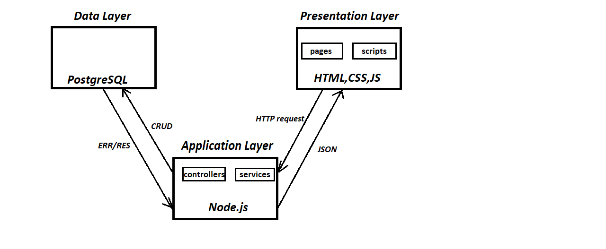
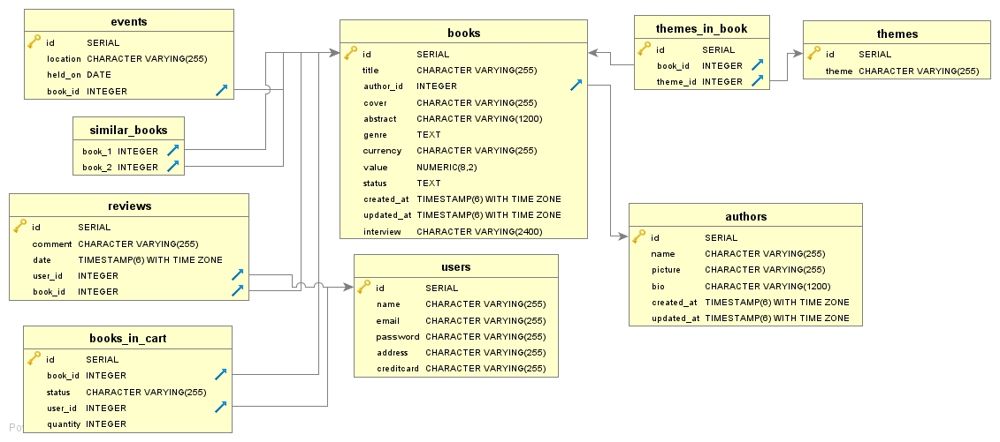

Documentation of the Backend part
Deliverable D1
General group information
Links to other deliverables
- Deliverable D0: the web application is accessible at
this address.
- Deliverable D2: the YAML or JSON file containing the specification of the app
API can be found at this address.
- Deliverable D3: the SwaggerUI page of the same API is available at
this address.
- Deliverable D4: the source code of D0 is available as a zip file at
this address.
- Deliverable D5: the address of the online source control repository is
available this address. We hereby declare that this
is a private repository and, upon request, we will give access to the
instructors.
Specification
Web Architecture

The application has 3 main components:
- Presentation layer
- Application layer
- Data layer
The Presentation layer represents the front end layer of the application and consists of the user interface.
The user interface is accessible through the web browser and displays content and information useful to the user.
In our application, the content concerning the presentation layer can be found in /src/public directory.
The directory consists of sub-directories which correspond to the components required to build the presentation layer.
The components are:
- JavaScript, which can be found in the src\public\scripts directory
- HTML, which can be found in the src\public\pages directory
- CSS, which can be found in the src\public\assets\css directory
The Application layer is the middle layer of the three tier architecture, it contains most of the application logic .
It communicates with both the presentation layer and the data layer.
The structure of the application layer depends on the design pattern chosen for the system.
Here we have two main parts: controller and service.
The communication between the presentation layer and the application layer is done through the HTTP protocol, using REST services.
The main HTTP methods used are GET and POST methods.
Controller represents the receiving end of the requests sent from the presentation layer.
It processes all the requests and the data that comes from the presentation level and calls the needed service.
The service then further processes the data sent from the controller and, depending on the type of the request,communicates with the database
in order to fullfil the user request.After the request is fulfilled the controller sends the response to the presentation layer.
The Data layer contains all the data of the application, stored in the database.
The main components concerning the persistence of the application can be found in the src\data and src\knex directories.
It is responsible for the persistence and the maintenance of the data in the system.
The communication between this layer and the application layer is made possible through the persistence API and database connectors.
We ensured that the HTML pages are not rendered on the server side by only allowing the application/json and application/x-www-form-urlencoded
format for the communication between the client and the server side.
Typically, if the user were to request to see the page of a book,the client would send the request with required parameters to
the server side. The request would be accepted by the appropriate controller which would call the suitable service in order to
satisfy the request. Upon receiving a response from the service the controller then sends the response to the client side which
then , possibly, redirects the user and renders the required page.
API
REST compliance
In our application we followed REST principles in the sense that the communication between the client and the server
is stateless as the client side keeps the needed information for authentication of the request. Moreover,
the application represents a client-server architecture because they both have different sets of responsibilities.
Furthermore, we have a uniform interface separating the client side and the server side. Finally, the application
is a layered system as all the components are separated and the only way they communicate is through a proxy.
Concerning the communication between the client side and server side, the requirements are clearly set, messages are self descriptive,
meaning the data format of a representation comes with its media type. Formats used for the communitaion are
application/json and application/x-www-form-urlencoded
OpenAPI Resource models
Describe here synthetically, which models you have introduced for resources.
Data model
The shelfawareness database has 11 tables, two of which (knex_migrations and knex_migrations_lock)
keep track of the migrations -- changes to the database that were implemented during the development of the project. These are
not shown in the ER diagram.

The remaining 9 tables, shown in the diagram above, relate to actual structure and functionality of the application. All the main
tables have their corresponding OpenAPI data models. The main tables are the ones that model an entity in the application (e.g. Book,
Event, User...), rather than a 1 to N relationship (e.g. Book -> Themes). A slight exception to this is the books_in_cart table,
for which the corresponding model Cart aggregates the information in the table by the specific user (i.e. cart).
Implementation
Tools used
To implement the web application, the following tools were used:
- Node.js environment used to write and execute the code for our application
- Swagger framework used to consume RESTful web services. Every endpoint was specified in the
swagger.yaml document and controller methods were created accordingly.
- Postgre database used for the data persistence
- Knex tool used to help write queries in order to save, update and delete data from the database.
Discussion
Describe here:
- In order to make sure our application adheres to the OpenAPI, we specified every endpoint in the
swagger.yaml document and created controllers, methods, accordingly. Only endopoints specified in this
document were accessible to the presentation layer.
- We designed the presentation layer of our application in a way that every page has a static skeleton structure
with JavaScript scripts that display dynamically loaded data as well as required page rendering modifications.
This way we believe we followed the common practises to partition the web application.
- In order to store the session state, upon the POST request to login the user, in the User controller,
userLoginPOST method we set the session id as well as the loggedin boolean field in the request.
Then, on GET request to log out the user, in the User controller,logoutUserGET method we set the session
id value in the request as well as the loggedin value.
These two methods, userLoginPOST and logoutUserGET, are the only methods changing the session state.
- For the data persistence we used PostgreSQL relational database for managing the data model.
There was no need for No-SQL databases because the parameters of every entity were clearly defined.
Other information
Task assignment
Describe here how development tasks have been subdivided among members of the
group, e.g.:
- Laura worked on front end (70%) and OpenAPI Spec (30% of the time)
- Jefimija worked on front end (30%) and OpenAPI Spec (70% of the time)
- Ana worked on front end (30%) and OpenAPI Spec (70% of the time)
Analysis of existing API
Describe here if you have found relevant APIs that have inspired the OpenAPI
specification and why (at least two).
Learning outcome
What was the most important thing all the members have learned while developing this part of the project, what
questions remained unanswered, how you will use what you’ve learned in your everyday life?
Examples:
- Foo learned to write SQL queries and Javascript but wanted to know more about caching, he’s probably going to
create his own startup with what she has learned
- Bar learned how to deploy on a cloud platform, he would have liked to know
more about promises for asynchronous code…